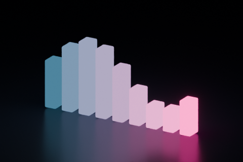
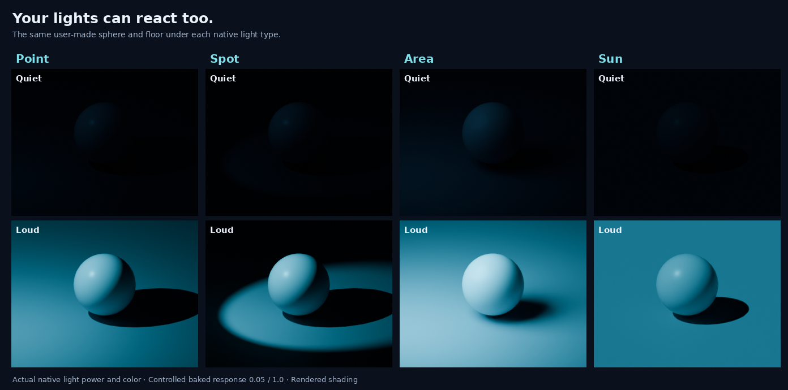
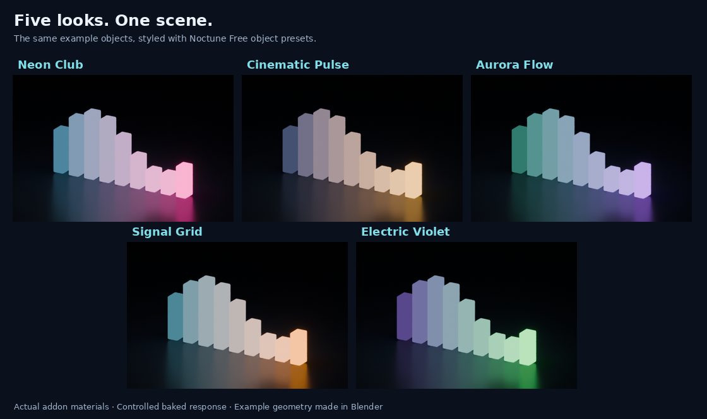
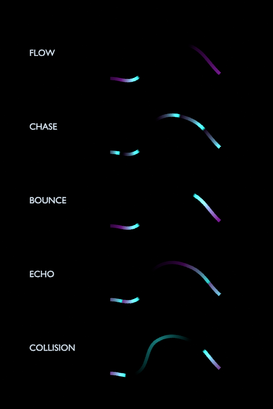
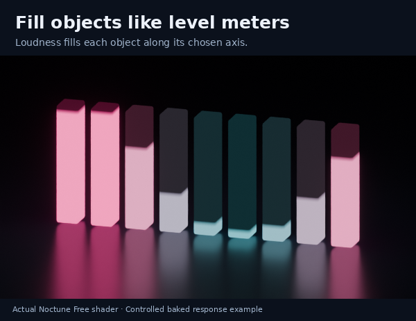

Your objects. Your music. A reaction ready to style. Noctune Free handles material preparation, audio calibration and playback so you can spend less time setting up.
Geometry and native lights Automatic audio calibration Build first. Style afterward.
Explore Noctune Free
Animate emission on meshes, curves and text, or drive the power and color of Point, Spot, Area and Sun lights. Select ordinary geometry and Noctune can prepare missing emission for you.

Browse Neon Club, Cinematic Pulse, Aurora Flow, Signal Grid and Electric Violet. Apply a look explicitly after building, or keep your material palette and tune the reaction yourself.

Choose Flow, Chase, Bounce, Echo or Collision. Curve waves follow their paths and continue across touching single-spline curve objects. Speed, Width and Intensity keep the main controls simple.


| Feature | Free | Pro |
|---|---|---|
| Music reactions on geometry and native lights | Included | Included |
| Five object looks and custom object looks | Included | Included |
| Ripple, Through Objects and Level Meter | Included | Included |
| Generated environment lights, beams, lasers and signals | — | Included |
| Spectral Swarm: Vortex, Supernova and Orbit | — | Included |
| Cage placement, environment presets and Live Mix | — | Included |
Pro includes Free. Install one edition at a time.
Demonstrations use original example scenes. The product supplies the add-on and guides; you bring your scene and music.
Build and Update keep the current appearance. Missing emission can be prepared on selected geometry; original material assignments are retained for restoration. Optional looks require an explicit Apply action.
Use Blender for cameras, render settings and video output. Noctune fits the timeline end when the track, Start Frame or frame rate changes. Later manual range edits stay until that configuration changes again.
The add-on runs locally without an account or license-key service.
The Blender extension ZIP and illustrated offline HTML documentation. Example images show scenes used for demonstration; those scene assets and music are not included.